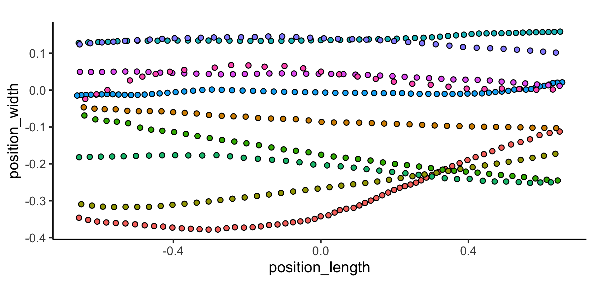
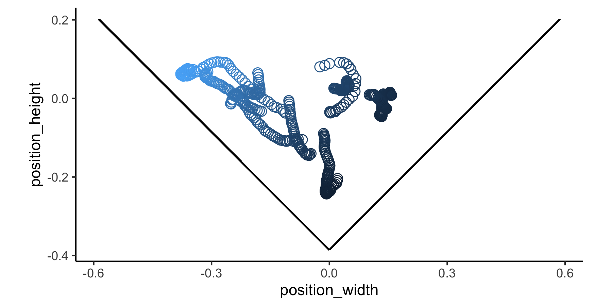

pathviewR offers tools to import, clean, and visualize animal movement data from Optitrack’s Motive, the Straw Lab’s Flydra, or from other sources. We provide functions to remove artifacts, standardize tunnel position and tunnel axes, select a region of interest, isolate specific trajectories, fill gaps in trajectory data, and calculate 3D and per-axis velocity. For experiments of visual guidance, we also provide functions that use animal position to estimate perception of visual stimuli.
Installation
This package can be installed via:
#install.packages("devtools") # if devtools is not installed devtools::install_github("vbaliga/pathviewR")
Example
Data import and cleaning via pathviewR; we’ll also load two tidyverse packages for wrangling & plotting.
We will import and clean a sample data set from .csv files exported by Optitrack’s Motive software. For examples of how to import and clean other types of data, see the data import and cleaning vignette.
## Import the Motive example data included in ## the package motive_data <- read_motive_csv( system.file("extdata", "pathviewR_motive_example_data.csv", package = 'pathviewR') )
Several functions to clean and wrangle data are available, and we have a suggested pipeline for how these steps should be handled. For this example, we will use one of two “all-in-one” functions: clean_viewr(). See the Data Import and Cleaning vignette for the full pipeline and the other “all-in-one” function.
motive_allinone <- motive_data %>% clean_viewr( relabel_viewr_axes = TRUE, gather_tunnel_data = TRUE, trim_tunnel_outliers = TRUE, standardization_option = "rotate_tunnel", select_x_percent = TRUE, desired_percent = 50, rename_viewr_characters = FALSE, separate_trajectories = TRUE, max_frame_gap = "autodetect", get_full_trajectories = TRUE, span = 0.95 ) #> autodetect is an experimental feature -- please report issues. ## Quick plot ## Colors correspond to unique trajectories (file_sub_traj) motive_allinone %>% ggplot(aes(x = position_length, y = position_width, fill = file_sub_traj)) + geom_point(pch = 21) + coord_fixed() + theme_classic() + theme( legend.position = "none" )

An important aspect of how pathviewR defines trajectories is by managing gaps in the data. See the Managing Frame Gaps vignette for more information on trajectory definition and frame gaps.
Now that the data is cleaned, pathviewR includes functions that estimate visual perceptions based on the distance between the subject/observer and visual stimuli on the walls of the experimental tunnel. For a complete description of these functions, see the Visual Perception Functions vignette.
Now that our objects have been cleaned, we will use insert_treatments() to add information about the experiments that are necessary for calculating visual perceptions.
motive_V <- motive_allinone %>% insert_treatments(vertex_height = -0.3855, vertex_angle = 45, stim_param_pos = 0.1, stim_param_neg = 0.2, treatment = "latB")
To calculate the spatial frequency of the visual stimuli as perceived by the subject some distance from the stimuli, we will use calc_sf_V().
The resulting object contains 10 new variables which are values involved in the calculation of spatial frequency.
motive_V_sf <- motive_V %>% calc_sf_V(simplify_output = FALSE)
To calculate an estimation of the visual angles perceived by the subject, we will use calc_vis_angle_V.
The resulting object contains 12 new variables which are values involved in the calculation of visual angles.
motive_V_angle <- motive_V %>% calc_vis_angle_V(simplify_output=FALSE)
Visualizing the calculations provides an more intuitive understanding of how these visual perceptions change as the subject moves throughout the tunnel. Please see the Visual Perception Functions vignette for more examples of visualizing calculations.
ggplot(motive_V_sf, aes(x = position_width, y = position_height)) + geom_point(aes(color = sf_pos), shape=1, size=3) + geom_segment(aes(x = 0, # dimensions of the positive wall y = -0.3855, xend = 0.5869, yend = 0.2014)) + geom_segment(aes(x = 0, # dimensions of the negative wall y = -0.3855, xend = -0.5869, yend = 0.2014)) + coord_fixed() + theme_classic() + theme( legend.position = "none" )
